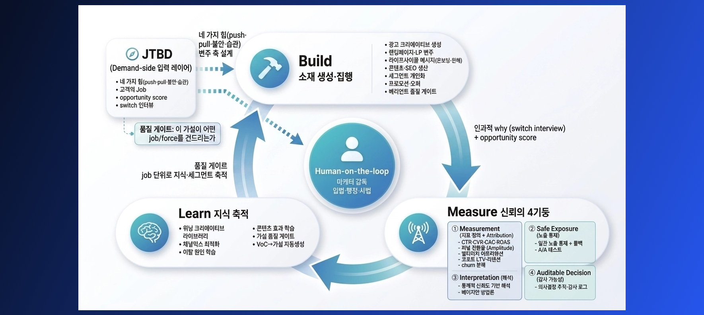
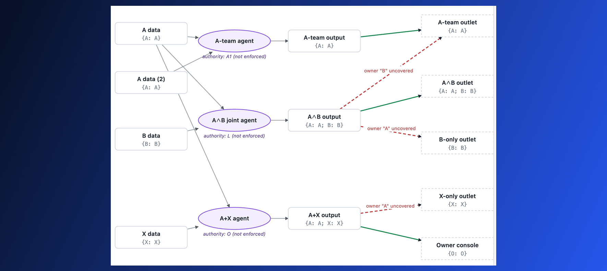
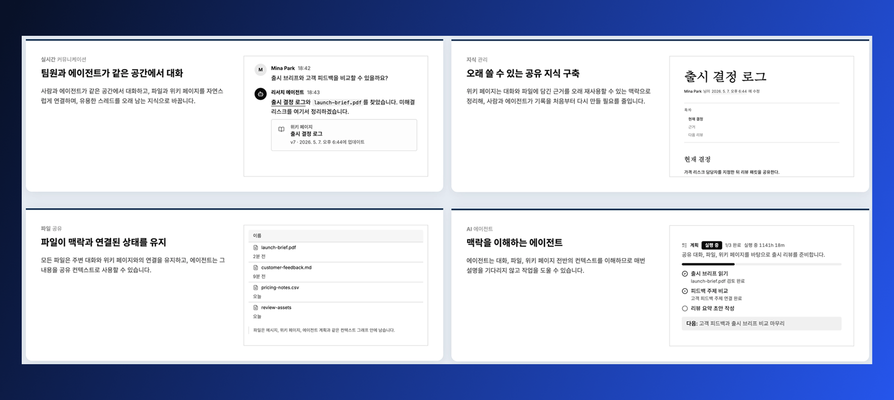
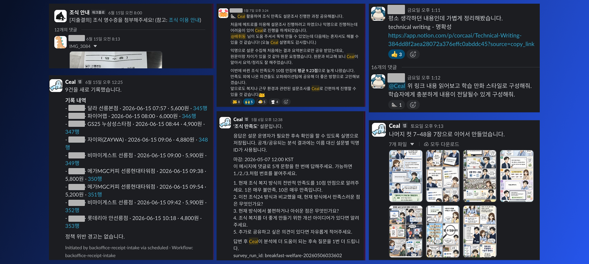
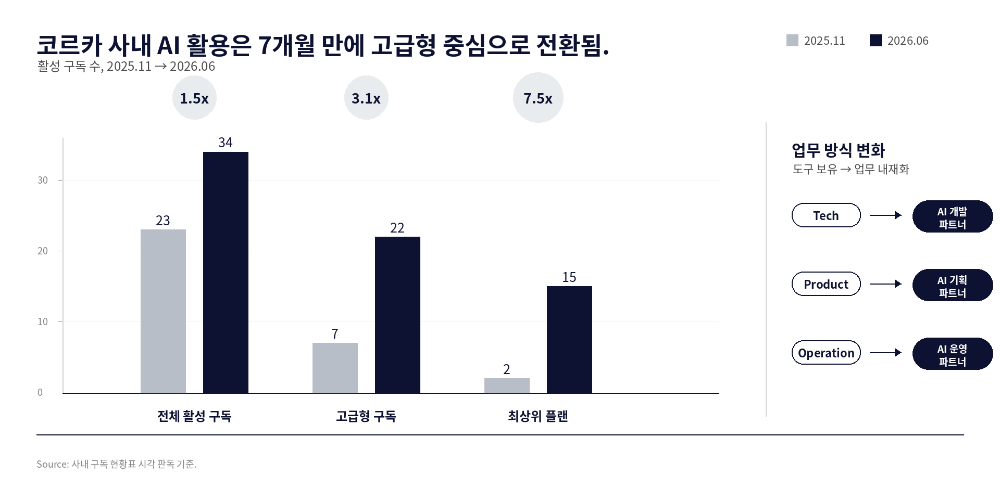

코르카
AX 가속화 컨설팅
AI 교육과 솔루션 도입을 넘어,
우리 조직의 실제 업무 방식이 달라지는
차별적 성과를 제시하는 코르카만의 AX 가속화 컨설팅 제안
AI 교육과 솔루션 도입만으로는
조직의 일하는 방식이
바뀌지 않습니다.
코르카의 AX 가속화 컨설팅은 외부자가 답을 대신 만들어주는
방식이 아닙니다.
현업 실무자가 코르카의 AI 전문가와 함께
실제 문제를 분해하고 해결하며, 그 경험이 조직 안에서 복제되도록 돕는 방식입니다.
목차
AI 교육, AI 솔루션 도입, 그래서 무엇이 달라지나요?
코르카의 AX 가속화 컨설팅은 어떻게 진행되나요?
컨설팅 프로세스 및 컨설팅 신청 방법
1장
AI 교육, AI 솔루션 도입, 그래서 무엇이 달라지나요?
'우리도 AI에 사활을 걸어야 해'라는 리더의 말에 가장 먼저 실행되는 2가지는 AI 교육, 그리고 ChatGPT, Claude, Gemini, Copilot 등의 AI 엔터프라이즈 솔루션 도입입니다. 그러나 이를 통해 '실제로 업무 방식이 크게 달라졌다'고 자신 있게 말할 수 있는 조직은 그리 많지 않습니다.
- 특강, 워크숍 형태의 교육으로 만들어진 일시적 관심이 실제 현업의 문제 개선이나 반복 실행으로 이어지지 못합니다.
- 엔터프라이즈 솔루션이 도입되고 AI 도구 구독 예산을 열어두어도 꾸준히 활용하는 구성원은 소수에 그칩니다.
- 결과적으로 AI 활용이 개개인의 우연적 실험에 머무르고, 팀 단위의 생산성 변화 및 가치 증강이 전사적으로 측정, 확산되지 못합니다.
코르카 또한 20개 이상의 조직, 1,000명 이상의 구성원을 대상으로 AI 교육을 진행해왔습니다. 한국 최초로 OpenAI의 공식 서비스파트너가 된 스타트업으로서, 조직의 ChatGPT 엔터프라이즈 도입을 기민하게 지원하고 있기도 합니다.
AI 교육과 솔루션 도입은 ‘개인적 변화의 필요조건’일 수는 있으나
‘조직적 변화의 충분조건’은 아닙니다.
교육 다음에는, AX 협업 문제를
함께 푸는 코칭이 필요합니다.
개인의 변화와 조직의 변화에 대한 높은 전문성을 바탕으로 AX의 전, 중, 후 과정을 효과적으로 돕는 파트너가 필요합니다. AI 활용 역량이 높아진 개인이 씨앗을 뿌리고, 조직은 그 씨앗이 안전하게 뻗어나갈 수 있는 토양을 제공할 때 비로소 AX가 굴러가기 시작합니다.
그래서 코르카가 선택한 것이 AI 교육에서 이어지는 코칭 기반의 AX 가속화 컨설팅입니다. 조직 내 실무자가 코르카의 AI 전문가와 함께 짝으로 작업하며, 코칭받으며 현실 문제를 해결함으로써 얻는 효능감이 조직 변화의 첫 눈덩이가 됩니다.
AI 활용 교육/특강 사례
신한은행, 컬리, 버즈빌, 빗썸, GS그룹, 리콘랩스, 클라썸,
토스, 시나몬, 라인플러스, 베스핀글로벌, 버킷플레이스, 화해글로벌, 블룸AI 등
AX 가속화 컨설팅 사례
노타AI, 타이키 테크놀로지스, 직방, 교원그룹 등
근거 요약
트랙 레코드
특강을 진행한 조직 수
구성원 수
컨설팅 사례
밋업 발표 기록
GenAI 활용 교육
- 신한은행 신입행원 대상 GenAI 활용 교육 - 4시간 80명, 4시간 30명
- 컬리 임원진 대상 GenAI 활용 교육 - 3시간 20여명
- 버즈빌 전사 대상 ChatGPT 활용 교육 - 2시간 80여명
- 운정CMS 교육자 대상 GenAI 활용 교육 - 3시간 20여명
- 빗썸 IT부문/서비스부문 대상 GenAI 활용 기본/심화 교육 - 3시간 * 23회차
비개발자 대상
바이브 코딩 교육
- GS그룹 바이브 코딩 입문 교육 - 2시간 80여명
- 리콘랩스 바이브 코딩 입문 교육 - 3시간 30여명
- 클라썸 바이브 코딩 입문 교육 - 3시간 10여명
- 토스 바이브 코딩 입문 교육 - 3시간 30여명
- 시나몬 바이브 코딩 입문 교육 - 3시간 40여명
개발자 대상
바이브 코딩 & AI 활용 교육
- GS그룹 Cursor 교육 - 3시간 12명 참여 + N명 참관
- 라인플러스 테크 토크 - 1시간 온라인
- 베스핀글로벌 기술직군 특강 - 2시간 온/오프라인
- 버킷플레이스 개발직군 특강 - 2시간 오프라인
- 화해글로벌 개발직군 특강 - 2시간 오프라인
- 블룸AI 기술직군 특강 - 2시간 오프라인
AX 가속화 코칭/컨설팅
- 노타AI AX 가속화 컨설팅 - 4시간 오프라인
- 타이키 테크놀로지스 AX 가속화 컨설팅 - 4시간 오프라인
- 직방 AX 가속화 컨설팅 - 4시간 * 4회 오프라인
- 교원그룹 AX 가속화 컨설팅 - 4시간 * 3회 오프라인
2장
코르카의 AX 가속화 컨설팅은 어떻게 진행되나요?
코르카의 AX 컨설팅은 외부자로서 문제를 진단하거나, AI 솔루션을 대신 제작해주기보다는 조직 내 AX 챔피언 후보 양성과 AX 환경 구축을 돕는 데 집중합니다. 이는 코르카 내외부에서 실제로 겪은 시행착오를 통해 진화해온 경험을 전이하는 것이기도 합니다.
고객사를 위한 솔루션 구축에도 열려있긴 하나, 그 솔루션 구축 또한 고객사의 내부 역량을 끌어올려 점차 유사한 작업을 스스로 해낼 수 있도록 하는 코칭에 더 초점이 맞춰져 있습니다.
1단계: AX 챔피언을 키우는
AX 챔피언 후보 양성
수많은 바이브 코딩 과외/강의/코칭/컨설팅에서 반복하여 확인한 점은, AI 활용 역량 향상의 0 → 1 여정에서 0 → 0.1 구간이 가장 큰 장벽이라는 것입니다. 거창한 에이전트 및 AI 서비스 개발 없이도 Codex 앱과 스킬, Computer Use만으로도 일상 업무가 굉장히 크게 편해질 수 있는데 비개발자나 AI 비숙련자에게는 그 시작이 너무나 어렵습니다. 이 마의 구간을 넘어가는 효과적인 방법이 ‘도메인 전문가와 AI 전문가의 짝 작업’입니다.
짝 작업에는 주로 Codex 앱을 활용합니다. 본인의 불편함과 고객의 불편함을 인지하고 답답해하는 현업 실무자가 가져온 문제를, 코르카의 AI 전문가와 함께 본인의 컴퓨터에서 직접 분해/조립/변경/해결합니다. 요즘의 AI가 무엇을 어디까지 할 수 있는지, 무엇은 AI가 여전히 잘 못해서 어떤 도구와 환경이 필요한 영역은 어디인지, 생소한 용어와 지식을 어떻게 AI를 통해 학습하는지 체험합니다. 짝 작업의 강력함을 배웁니다.
‘해보니까 되네’라는 효능감을 얻은 일부는 그 조직 내의 ‘AX 챔피언’이 되어 누가 시키지 않아도 미친듯이 달리며 주변인들을 자극합니다. 옆자리 동료들에게 본인의 노하우를 퍼뜨리며 짝 작업을 합니다. 이러한 챔피언에게 영향을 받은 분들이 다음 챔피언 후보가 됩니다. 이렇게 개인의 성공 경험이 복제되어 피라미드식으로 가속화하도록 돕는 것이 코르카가 지향하는 AX 컨설팅입니다.
물론 비개발자가 한두번의 세션만으로 풀스택 엔지니어로 변모하는 건 불가능합니다. 0.1이었던 분이 0.5, 0.6을 넘어가면 DB, API, 인프라, 보안 등 ‘딸깍’만으로 넘기 힘든 장벽이 다시 나타납니다. 이러한 어려움이 후속 세션의 재료이며 동시에 2단계에서 조직과 함께 풀어야 하는 숙제입니다.
CAPS
인간의 감독 하에(Human-on-the-loop) 최대한 자율적으로 동작하는 소프트웨어 생산·운영 시스템. 각 구성원의 성공적 에이전트 세션을 팀의 자산으로 바꾸는 CLI, 소프트웨어 개발 및 운영의 전 과정을 에이전트가 장기 자율 실행할 수 있도록 패키징한 Skill, 에이전트가 생산하는 코드 품질을 높이고 스스로의 작업을 검증하도록 돕는 각종 린터와 도구들로 구성.

CASM
AI 에이전트는 너무 빠르고 부지런하고 똑똑하지만, 동시에 속기 쉬우며 책임은 질 수 없는 존재. Information Flow Control, Decentralized Label Model 등의 연구들을 엮으면 누가 무엇을 읽어도 되는지에 대한 보안 레이블링이 되어 있는 지식 체계를 설계하는 게 수학적으로 가능. 이러한 샌드박스 내에서 동작하는 에이전트는 정보 접근 및 전파를 효과적으로 통제할 수 있음.

Craken
실시간 대화, 파일 공유, 지식 관리를 긴밀하게 통합한 작업 공간. 멀티-에이전트 멀티-유저 환경에 최적화되어 인간과 에이전트가 맥락을 잃지 않고 일을 진행하도록 도움. 문서를 읽는 중 궁금한 점을 물어보거나, 필요한 위키 문서를 즉석에서 생성하는 등 UI 모든 곳에 지능이 존재(Ambient Intelligence). Codex, Claude Code 등 본인의 에이전트를 워크스페이스에 데려와서 작업 가능. CAPS 및 CASM을 이용하여 기획, 개발, 운영됨.

Ceal
슬랙, 깃헙, 노션, 구글 워크스페이스 등 조직에 연결된 모든 도구로부터 맥락을 검색⋅취합⋅작업하는, 인간 동료를 닮은 에이전트. 슬랙에서 이미지가 첨부된 메시지를 받아 웹 검색을 하고, 깃헙 저장소에서 적절한 정보를 찾아 읽은 다음, 노션에 적힌 내부 정책에 따라 작업을 처리해, 구글 시트에 작성하는 식의 작업이, 보안과 권한 경계를 지키며 매끄럽게 이루어짐. CAPS 및 CASM을 이용하여 기획, 개발, 운영됨. 배포 인스턴스에도 CAPS가 내장되어 팀 맥락에 맞는 스킬과 도구를 비개발자도 쉽게 추가⋅관리할 수 있음.

3단계: 결과가 아닌 과정을,
정답이 아닌 AX 경험 확산을
코르카는 AX에 진심이지만, 코르카가 제시하는 것이 정답이니 따라야만 한다는 건 절대 아닙니다. 사실 AX에는 정답이 없습니다. 어제 '미쳤다'고 들었던 베스트 프랙티스가 오늘 '죽었다'며 소셜 미디어에서 떠도는 대혼란의 시기입니다.
따라서 누군가 만들어준 결과물이 아닌 개인과 조직의 상황에 맞는 스킬을 조직 구성원의 손으로 만들고 발전시키는 과정이, '정답'이 아닌 '경험'이 전이되어야 합니다.
코르카가 이런 이야기를 자신있게 할 수 있는 이유는 그만큼 밀도있는 시행착오를 해왔기 때문입니다. 코르카는 2021년 창업 이래 꾸준히 AI를 사용해왔고, 2가지 AI 제품(문라이트, 트레이스)을 운영하며 노하우를 쌓았으며, 2025년 6월에는 사내 클로드 코드 해커톤을 개최했고, AI 활용 및 에이전틱 엔지니어링 노하우와 시도를 나누는 사내 세미나를 매주 진행했습니다.

하지만 코딩 에이전트 활용 정도를 비롯해 조직의 AI 네이티브 전환 속도는 기대만큼 빠르지 않았습니다. 그런데 2026년 초부터 눈에 띄는 변화가 생기기 시작했습니다. 물론 원인은 복합적이겠으나, 코르카 내부에서는 다음 3가지가 주된 동력이었다고 봅니다. 3가지 모두 핵심은 '경험을 공유하며 모두가 참여'하는 데 있었습니다.
2단계: 문턱은 낮추고
천장은 높이는
안전한 AX 환경 구축
0.1을 넘은 분들로부터 굉장히 자주 듣는 고민들이 있습니다.
현업 실무자의 고민
- 데이터가 너무 여러 도구, 여러 소스에 흩어져있어요. 에이전트가 조직의 데이터를 잘 못 찾고 잘 못 읽으니 계속 복붙을 해야 해요.
- 워크플로우를 좀 더 많이 자동화하고, 옮기고 싶은데 비개발자라 계정도 없고 권한도 없어요. GitHub, AWS 등등 승인받아야 게 너무 많아요.
- 프로젝트를 진행할수록 프로그램과 에이전트가 말을 안 들어요. 개입은 너무 자주 해야 하고, 토큰은 계속 나가는데 진도는 잘 안 나가요.
- 내가 혼자 다 할 수 있을 것 같은데, 다른 분들의 업무 범위를 침범할까봐 주저하게 돼요. 의사소통하고 얼라인하는 시간은 오히려 더 늘어나는 느낌이에요.
경영진, HR, 보안 담당자의 고민
- 토큰을 너무 안 써도 문제, 너무 많이 써도 문제. 토큰 비용을 어떻게 관리하지? 누가 얼마나 쓰는지, 안전하게 쓰는지, 잘 쓰고 있는지 어떻게 확인하지?
- 구성원들끼리 AI 역량 격차가 심하고 활용하는 방식이 천차만별. 모두가 자기만의 스킬을 만들고 저장소를 만드는데 어떻게 관리하고, 품질 격차를 줄이지?
- AI 도입을 통해 생산성이 향상됐음을 어떻게 측정할까? 개개인이 아낀 시간과 에너지를 어떻게 조직 차원의 더 큰 가치로 전환할까?
- 우리가 가진 정보를 어디까지, 얼마나 에이전트에 넣어도 괜찮을까? 우리가 만드는 에이전트는 과연 안전할까? 보안 경계를 지키면서도 유용하게 AI를 사용하려면?
하나하나가 쉽지 않으면서도 개별 조직의 특성에 맞는 정책 설계와 해결책이 필요한 문제입니다. 코르카에서는 이런 문제들을 고객사와 함께 깊이 고민하며, 고객사의 더 나은 의사결정과 더 효과적인 AX 환경 구축을 돕습니다. 코르카가 개발한 도구와 프로세스가 이러한 환경 구축의 씨앗이 되어줄 수 있습니다.
3장
컨설팅 프로세스 및 컨설팅 신청 방법
코르카의 컨설팅은 AX 챔피언 양성, AX 환경 구축, AX 경험 전이 3가지가 동시에 일어나게 하기 위해 설계되어 있습니다. 고객사의 상황에 따라 크게 달라질 수 있으나 일반적으로는 다음과 같이 진행됩니다.
고객사에서 AX와 관련하여 주로 어떤 고민을 하고 있는지 듣고, 코르카의 어떤 자산과 경험이 도움이 될지 논의합니다. 고객사에서 AI를 활용해 만들고 싶은 변화 중 무엇이 어떻게 가능할지 의견을 드립니다.
1에 따라 고객사의 AX 담당자와 함께 세션 및 프로젝트를 설계합니다. ChatGPT 엔터프라이즈 도입 및 활용률 증대, AI 네이티브 팀 빌딩, AX Day 진행, AI 역량 향상 교육, 코칭 세션, AX 환경 구축, 조직 맞춤 AI 솔루션 제작 등이 포함될 수 있습니다.
AI 역량 하방을 전사적으로 빠르게 끌어올릴 필요가 있다면 코르카와 협력하는 AI 교육사와 함께 집체교육을 진행합니다.
AX 챔피언 양성 코칭 세션을 4시간 * n회 진행합니다. 코치와 실무자의 짝 작업으로 현업의 실제 문제를 함께 풀며 역량을 높입니다. 참관자가 포함된 세션이라면 참관자의 학습 및 참여를 위한 가이드라인이 함께 제공됩니다.
AX 환경 구축을 위한 과제를 논의하여 진행합니다. 코르카의 솔루션을 도입하거나 조직 맞춤 AI 솔루션을 함께 제작할 수 있습니다.
코르카와 유사한 AX Day를 진행하거나, AI 네이티브 팀 빌딩에 관심이 있다면 경험 설계 및 프로세스 설계를 지원해드립니다.
컨설팅 신청을 위한 사전 질문
효과적인 컨설팅을 위해 사전에 몇 가지 정보가 필요합니다. 아래 5가지 질문에 대한 답변을 보내주시면 귀사의 맥락에 맞는 세션을 함께 설계하기 수월해집니다.
1. 형태
어떤 형태의 컨설팅에 관심있으신가요? ChatGPT 엔터프라이즈 도입 및 활용률 증대, AX Day 진행, AI 네이티브 팀 빌딩, AI 역량 향상 교육, 코칭 세션, Craken/Ceal 도입, 조직 맞춤 AI 솔루션 제작 등
2. 당면한 과제
AI를 활용해 해결하거나 개선하고 싶은 실제 업무 과제들은 무엇인가요? 일반 직원, 팀 리더, HR, C-Level 등의 입장에서 답변해주시면 좋습니다.
3. AX 환경 수준
조직 내에 AX를 전담하는 인원이나 팀이 있나요? 조직 내 데이터가 에이전트를 위한 형태로 어떻게 흐르고 있나요? 도구와 데이터의 권한은 어떤 식으로 관리되고 있나요?
4. AI 리터러시 수준
그룹별, 직군별 등으로 나눠서 조직 구성원들의 AI 활용 및 바이브 코딩 리터러시 수준은 대략 어떻게 분포되어 있나요?
5. 리더들의 기대 변화 및 측정 방법
컨설팅 후 귀사의, 또는 참여자들의 'AX 수준' 또는 'AI를 활용한 업무 생산성'이 실제로 높아졌음을 1주일, 1개월 뒤 시점에 어떻게 확인할 수 있을까요? 어떤 행동이 관찰되면 될까요? '전사적 AI 도입을 고민하는 리더를 위한 6가지 전략'을 읽어보시길 추천드립니다.
진단 척도
AI 리터러시 설문 예시
컨설팅 신청 및 계약
컨설팅 계약 및 비용에 관한 문의는
아래로 연락 주시기 바랍니다.
배휘동 · bae.hwidong@corca.ai
(cc: corca-tax@corca.ai)
논의 내용에 맞춰 성실히 안내드리겠습니다.
OpenAI 공식 서비스파트너인 코르카를 통해 ChatGPT 엔터프라이즈 계약을 체결하시는 조직에는 컨설팅 비용 할인을 비롯한 다양한 혜택이 주어집니다.
코르카 AX 가속화 컨설팅
2026년 6월 26일
서울특별시 강남구 테헤란로77길 11-8, 6층 주식회사 코르카
contact@corca.ai
02-6925-6978
Copyright © Corca, Inc.